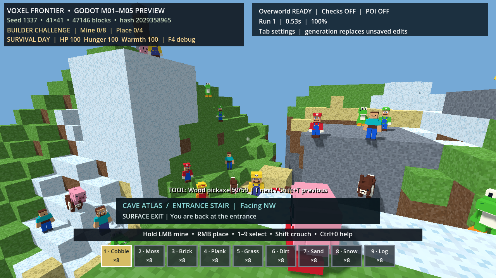

루프 목표
각 캐릭터 변형을 10마리씩 생성하되, 모든 맵에서 활성 몬스터는 최대 130마리를 넘지 않게 한다. 몬스터는 지형 충돌만 사용하고 목표 지점까지 배회하며, 막히거나 주기적으로 점프한다.
게임 플레이 증거

실제 Godot 렌더 창. 여러 캐릭터 변형이 지형 충돌 위에서 이동하며, 스폰 지역의 절벽·돌·눈 지형에서 점프 경로를 시도한다.
구현 계약과 자동 검증
- 13종: mario, luigi, wario, yoshi, kirby, creeper, steve, luffy, pig, volt_mouse, eevee, roblox_r6, roblox_r15
- 종류별 10마리, 총 130마리.
MobDirector.MAX_MONSTERS가 상한을 강제한다. - 10Hz 배회 의사결정과 물리 기반 이동을 사용한다. 몬스터끼리 충돌하지 않고 지형만 충돌해 130마리 군집 비용을 제한한다.
tools/mob_smoke.gd18개 단언 통과: 13×10 구성, 130 상한, 실제 위치 이동, 점프 이벤트.- 기존
RunTests.bat65개 단언도 통과했다.
설계 검토와 다음 개선
이 구현은 제공된 가이드의 결정적 GLB 모델만 참조하며, 가이드 속 실행 절차나 외부 프로젝트의 명령은 가져오지 않았다. 현재 몬스터는 공격·피해·사망·드롭·저장·NavMesh 회피를 갖지 않는 배회 프로토타입이다. ARM64 기기에서 130마리의 실제 프레임 시간은 아직 측정하지 않았으므로 모바일 성능 완료를 주장하지 않는다.
후속 종료 게이트
다음 생존 이벤트 단계에서 낮/밤 스폰 규칙, 플레이어 탐지·공격, 사망/드롭, 스트리밍 청크 이탈 회수와 ARM64 실기기 프레임 프로파일을 추가한다.